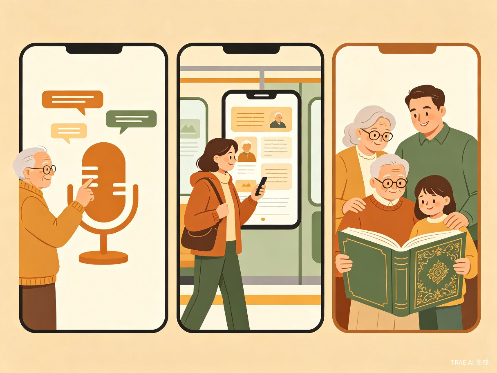

创意介绍
银发故事会是一款面向老年人的 AI 语音回忆录微信小程序。子女端创建"家庭回忆录"并邀请老人加入，老人端仅需点击大按钮进行语音录音，AI 自动将语音转为文字并生成开放式追问，引导老人持续讲述；最终自动排版生成图文并茂的 PDF"人生之书"，支持一键下单精装打印寄送到家。
产品核心流程
家庭回忆录
加入小程序
AI智能追问
整理成文
精装打印到家
创意来源
灵感来源于团队一位成员的外婆，她总爱讲年轻时当教师的故事，但每次让子女帮忙写下来时，子女都忙于工作无暇细问。
我们意识到，如果能用 AI 语音交互让老人像"拉家常"一样自然讲述，再自动整理成书，就能让每个普通家庭都拥有属于自己的"家族记忆册"。
目标用户及痛点
面向哪些用户
核心用户：60岁以上老年人
不擅长文字输入，有丰富人生经历和表达欲望，渴望被倾听、被记住。
核心用户：中年子女（照护者）
工作繁忙，有心为父母记录故事却时间有限，希望高效、低成本地留存家庭记忆。
次要用户：孙辈及家庭成员
希望了解祖辈的故事，参与互动留言，共同构建家族文化传承。
使用场景

当前痛点
- 老人有表达欲但缺乏合适工具 — 手机备忘录需要打字，普通录音机只能存储零散文件，无法自动整理和生成追问。
- 子女有心记录却时间有限 — 面谈记录成本高、效率低，难以持续跟进。
- 传记定制服务价格昂贵 — 市场服务动辄数千元起，周期长，普通家庭难以承担。
- 现有语音App不适老 — 如讯飞语记等，按钮太小、引导缺失，未考虑老年人视力和操作能力，老人无法独立使用。
价值与意义
社会价值
填补智慧养老在情感陪伴与精神关怀领域的空白。让老人通过讲述获得被倾听的满足感，为家庭留存珍贵的口述历史，促进代际理解与家族文化传承。面向农村留守老人，支持离线录音，极大降低使用门槛。
商业价值
依托微信生态，裂变传播成本极低。基础服务免费（录音、转写、智能追问、在线预览），增值服务收费（精装成书打印、多语言翻译、定制封面等），未来可延伸至养老机构企业团购，形成可持续营收。
效率提升
相比传统人工采访整理，AI 自动转写+智能追问将成书时间从数月缩短至数天。子女可远程协作，无需频繁上门，大幅降低家庭记录成本。
商业模式
| 服务层级 | 服务内容 | 定价策略 |
|---|---|---|
| 基础服务 | 语音录音、AI转写、智能追问、在线预览 | 免费 |
| 精装成书 | 自动排版、精装印刷、包邮到家 | 99 ~ 199 元/本 |
| 附加服务 | 多语言翻译、定制封面、视频二维码 | 按需定价 |
| 企业团购 | 养老机构、社区服务中心批量订购 | 批量优惠 |
产品亮点总结
零门槛语音交互
大按钮设计，老人只需按住说话，AI 自动转写追问，无需打字、无需学习。
AI智能追问引导
根据老人讲述内容自动生成开放式问题，像"拉家常"一样引导持续讲述。
一键生成人生之书
自动排版生成图文并茂的PDF，支持上传老照片智能匹配插入篇章。
精装打印寄送到家
一键下单精装实体书，含排版、印刷、包邮，让回忆触手可及。
微信生态裂变传播
无需下载App，小程序即开即用，家庭邀请机制天然利于社交裂变。
离线录音支持
面向农村留守老人，无需持续网络环境，降低数字鸿沟。